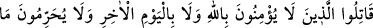
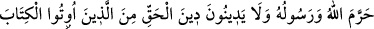
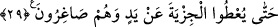

emreder. Kalb Kâbesinin, nefsin şirki ve kötü vasıflarının pisliği ile kirlenmemesi için,
nefis ve sıfatlarının kalb Kâbesi etrafında dolanmasını nehyeder.
Nefis, kalb etrafında dolanmaktan men edilince kalb nefse uymakla elde ettiği şehevî
hazlarını kaybetmekten korkar. Cenab-ı Hak bu kimseye mevhibelerinin fazlını, rabbânî
vâridâtı, şevâhidi ve rahmânî keşifleri açmak suretiyle onu bu hazlardan müstağnî kılar.
Cenab-ı Hakk’ın “dilerse” ifadesinde Allah katında olanlara ancak Allah’ın meşîeti
(dilemesi) ile nâil olunacağına işâret vardır.” et-Te’vîlâtü’n-Necmiyye’de böyle
geçmektedir.
Hâfız şöyle der:
İskender’e âb-ı hayâtı bağışlamazlar
Bu suyu güçle, altınla ele geçirmek müyesser olmaz
29. Kendilerine kitap verilenlerden Allah’a ve âhiret gününe inanmayan, Allah’ın
ve Elçisi’nin haram kıldığını haram saymayan ve hak dini din edinmeyen kimselerle,
zillet içinde elleriyle cizye verinceye kadar savaşın.
Ey müminler, “kendilerine kitap” Tevrat ve İncil “verilenlerden Allah’a” gereği gibi
“ve âhiret gününe” gereği gibi “inanmayan,” kimselerle savaşın. Çünkü yahudiler
Allah’ı ikilemekte, hristiyanlar ise üçlemektedir. Böyle olunca onların Allah’a imanları,
hiç yok gibidir. Âhiret konusunda ise yahudiler cennette yeme ve içmenin olmayacağını,
hristiyanlar ise yalnızca rûhânî haşr/dirilme olacağını kabul etmektedirler. Dolayısıyla
onların πahiret halleri hakkındaki bilgileri sanki yok gibidir. Aynı şekilde onların bu
bilgi üzerine inşâ ettikleri imanları da iman değildir.
Kâmil mümin o kimsedir ki Allah Teâlâ’yı şânına lâyık sıfatlarla vasfeder. O’nun bir
olduğuna inanır, noksan sıfatlardan tenzih eder, hem rûhânî ve cismânî haşre hem de
cennette maddî ve mânevî nimetlerin varlığına inanır. Çünkü bedenin ve ruhun her
birinin nimetlerden kendi durumuna uygun ve makamına münâsib hazzı ve nasibi vardır.
“Allah’ın ve Elçisi’nin haram kıldığını haram saymayan” yani vahy-i metlüv olan
Kitab ile ve vahy-i gayri metlüv olan sünnetle haram kılındığı sabit olan kan, leş, domuz
eti, şarap gibi şeyleri haram saymayan “ve hak dini” İslâm dînini “din edinmeyen” ona
inanmayan ve kabul etmeyen “kimselerle”..
“Hak” kelimesi “sâbit” mânâsınadır. Hak din olan İslâm, sâbit bir din olup kendisi
dışındaki bütün dinleri nesh etmiştir.
Katâde’den rivayet edildiğine göre âyetteki “Hak”, Allah Teâlâ’dır. Buna göre âyetin
mânâsı şöyle olur: “Allah’ın dinini din edinmeyen kimselerle savaşın” Allah’ın dini ise